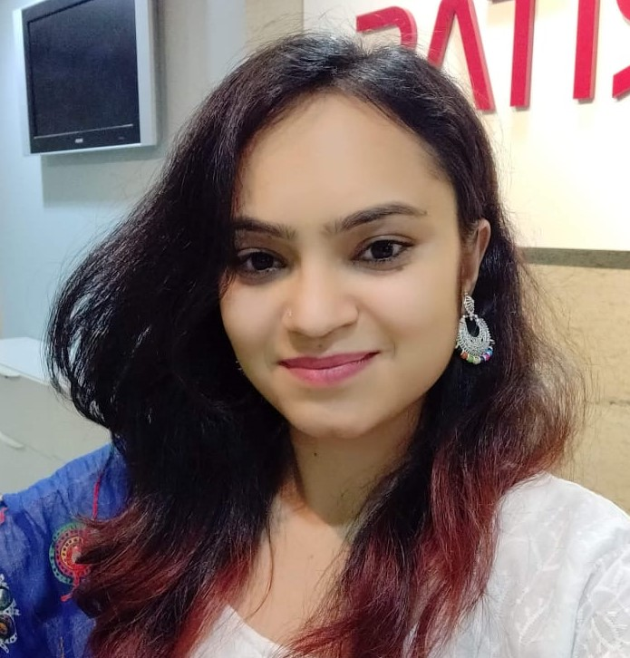

When I heard about SWE, I did a little research about the purpose of SWE and the work they do. It seemed interesting to me, but at the same time, I was clueless about what and how we were going to take this affiliate forward. I took this as an opportunity to explore more about SWE and indeed it has proven to be a great one. The SWE team was small but very enthusiastic and dedicated. The efforts that were put into establishing the affiliate have given great results in terms of affiliate growth, the response from students, and also personal development.
How was the student response initially? How many people did you start with? What events or activities did you hold then to inspire more women to be a part of this organization?Initially, the students’ response was good and if my memory serves me correctly, around 100-120 students attended the SWE inauguration event. Our team was pretty small though. After the establishment of the affiliate, the team along with our Advisor Dr. Anagha Kulkarni Mam came up with ideas for various events. We also had very good support from Neema Nair Mam, Karen Mam, and Arun sir from Cummins India. Along with all of them, we successfully conducted events like Career Day, Inspirational talk by Rtd. Wg Cdr Kanchan Singh, interaction with students from Indiana University, mentoring program and finally, we attended the SWE conference. As the events progressed, the interest of students started growing towards SWE, more volunteers showed up and great ideas came in
What is your most memorable event conducted from the time you were in charge of SWE?For me, the most memorable event was the WE Local conference. I got a chance to meet so many people over there, listen to great talks, and interact with SWE leaders. Another special thing is an initiative that we took to support tribal workers working with Aarohana(an NGO) by selling goodies at the conference stall, which were made by them.
As a woman who is currently working as a professional how important do you think it is to educate other women about STEM and encourage them to pursue a career in it?In today's world, especially in the lockdown period, the use of technology has taken flight, and hence, education in technology has become important to one's life. With the growing innovations and development in almost every field, the demand for skilled people is increasing, which is a clear indication of opportunities in STEM fields for which STEM education is necessarily important. When the opportunities are open why not women grab it.
Have you ever faced any kind of discrimination in the industry based on your gender or technical qualification? How did you fight it?Fortunately, I haven't faced any kind of discrimination. But if I were in such a situation, I would have stood strong and politely raised it upfront with the required justification.
How has SWE helped you through your professional or personal growth?SWE has been instrumental in grooming my personality. I was always excited to perform leadership roles, plan events, work with a team and SWE has given me that opportunity. Throughout this journey, I have explored myself and my qualities very well. All that I have done was a challenge then, which has indeed built up my confidence to do everything I did till today. The networking exposure given by SWE has made me bold enough to have a healthy conversation with people in the corporate world.